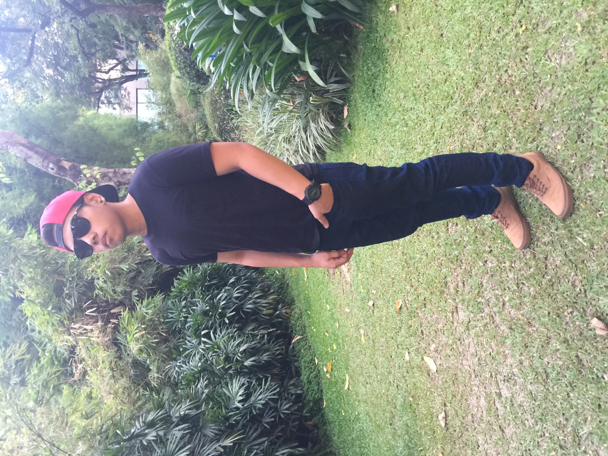

☰
Personal Info

Hi! my name is Keiron Adriano, and I enjoy meeting new people and finding ways to help them have an uplifting experience. I am currently studying BSBA - Major in Marketing Management at Far Eastern University - Makati. I am a simple guy with endless dreams that haven't been fulfilled yet. I am the type of guy that is quiet and doesn't talk alot if we are not yet friends, but if you get to know me you will always laugh when I am around. Know me more by browsing by my site, hope you will enjoy!
Education
2001 - 2012
Since 2001 (Kindergarten) I already studied in SMA which I love so very much because up until 2012 (4th Year) I was with this school.
2012 - Present
Although the time was shorter compared to my gradeschool - highschool stay in my first school, FEU - Makati was one of the best experiences that I have. I would always be thankful to this school.